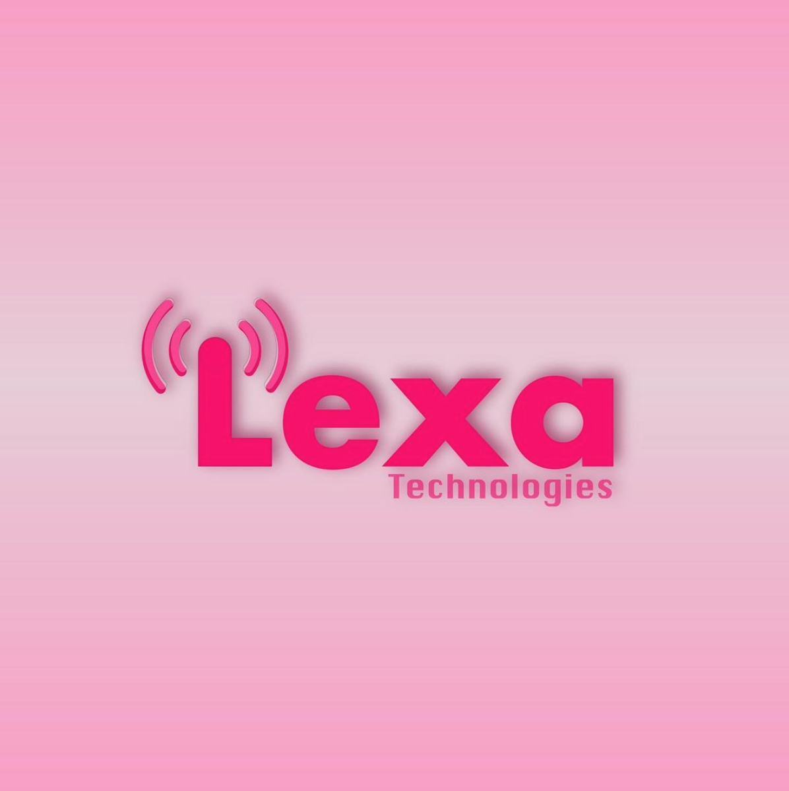
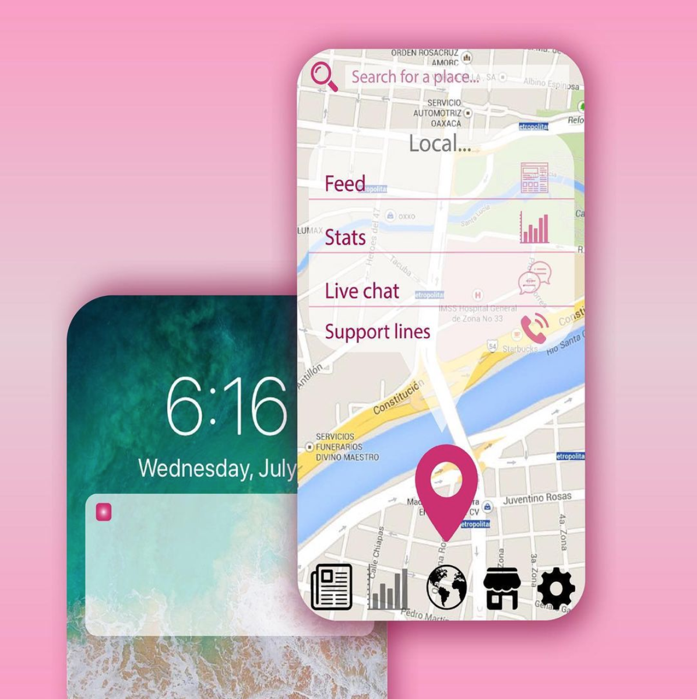
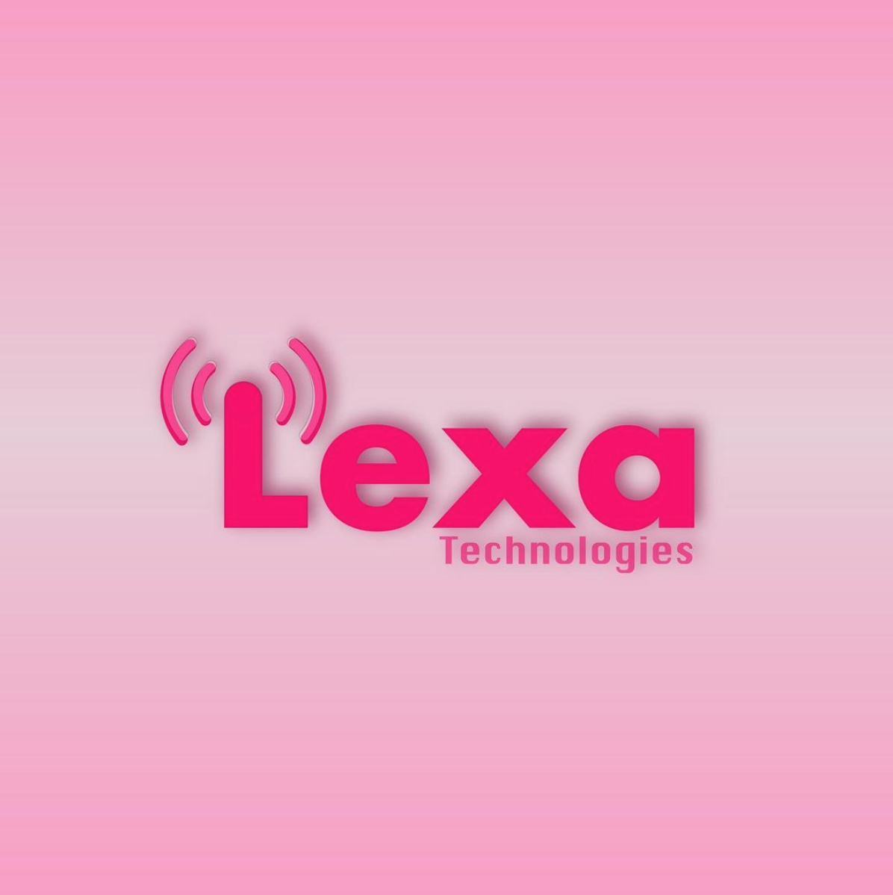
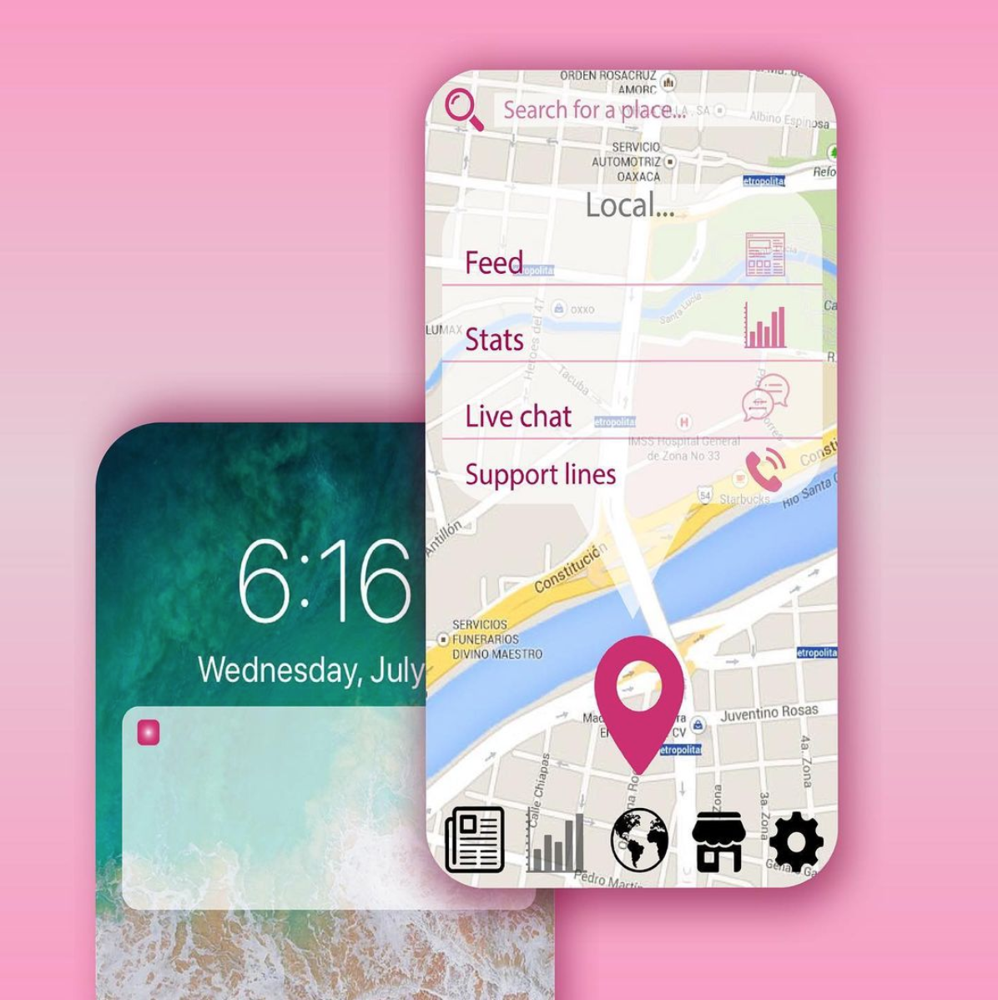
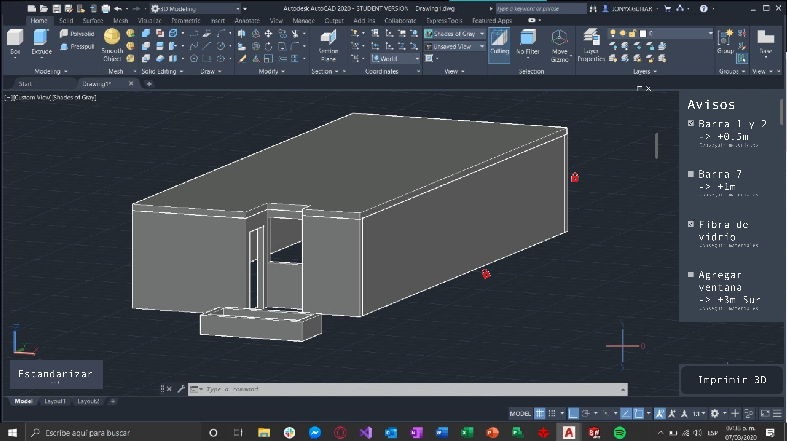
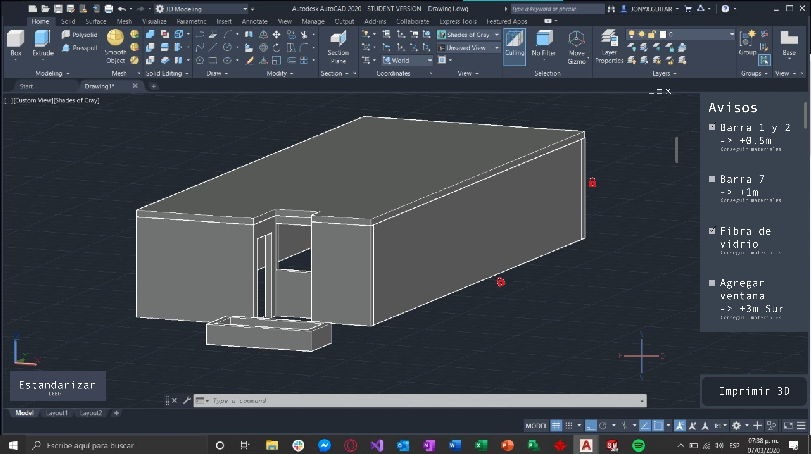

UX/UI Design & Prototyping
Jorge Farías Arizpe: Web development, web design, and digital marketing
I am the designer and part of the development for my client Jorge Farías Arizpe. For his project I also get to do the marketing strategies when it comes to his books, his Newsletters, online courses, logo and branding, etc. I basically did the 360º, and I have been learning a lot!


NANA: Photography, UX/UI design, & development
From photography, to design, to development. The Nana fitness and wellbeing business needed an end-to-end solution to their website, that's what we provided. Another satisfied client!


DXOMARK: UI designs for website
For their website, different pages where designed and sometimes prototiped using Figma and Adobe Illustrator, more specifically for the DXOMARK score remapping, the biggest event of the year for the company.

.png)

TUYO: UX & UI consultancy and proposals
UX & UI consultancy of the startup TUYO, a platform that changes the way to visit Latin America by partering with local artists, photographers and post cards.


CDO of Mimetic: The innovation wallet of everything for everyone
Design of one of the first prototypes of Mimetic, an innovation funnel Startup. 2nd prototype in Figma. Currently in an incubation on which my team won a 100% scholarship for.


Lexa Technologies
UI design for screenshots our family Startup app Lexa Technologies. The app connects devices for the protection of people, especially women, in the streets. Used as an alarm for police stations nearby, newsfeed, and IA to tell the most dangerous places in a city.
 



Cemex Hackathon: UI/UX Design
Project for Cemex for their Residual Management area. I designed an interface much like Autodesk Autocad, but that uses Generative Design for projects, gives you an approximate of the cost and Ambiental impact (with possibilities to change materials depending on your location), and even the possibility to 3D print the structure, if the building is small enough. Designed in Adobe Illustrator.
 
